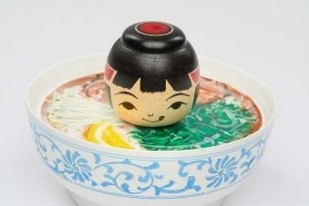

Vietnam Sōsaku Kokeshi là tác phẩm được sáng tác theo phong cách Tsugaru Kokeshi, kết hợp nghệ thuật chế tác Kokeshi truyền thống của Nhật Bản với hình ảnh phở – món ăn được xem là biểu tượng của ẩm thực Việt Nam và đã được yêu thích trên toàn thế giới.
Điểm đặc biệt của tác phẩm là phần đầu búp bê Kokeshi được đặt trên một tô phở với bánh phở, rau thơm và các nguyên liệu quen thuộc. Cách tạo hình độc đáo này mang đến cảm giác gần gũi, vui tươi nhưng vẫn giữ được những đường nét đặc trưng của nghệ thuật Kokeshi. Sự kết hợp giữa kỹ thuật tiện gỗ truyền thống của vùng Tsugaru và hình ảnh món ăn quốc dân của Việt Nam thể hiện tinh thần sáng tạo của các nghệ nhân trong việc kết nối hai nền văn hóa.
Đối với người Việt Nam, phở không chỉ là một món ăn mà còn là biểu tượng của bản sắc dân tộc, sự sum họp và văn hóa ẩm thực truyền thống. Thông qua tác phẩm này, các nghệ nhân Nhật Bản bày tỏ sự yêu mến đối với văn hóa Việt Nam và gửi gắm thông điệp rằng ẩm thực cũng là một ngôn ngữ văn hóa có khả năng kết nối con người vượt qua mọi khoảng cách địa lý. Đây là một tác phẩm giao lưu văn hóa độc đáo, minh chứng cho tình hữu nghị ngày càng bền chặt giữa Việt Nam và Nhật Bản thông qua nghệ thuật thủ công truyền thống.
ベトナム創作こけしは津軽系こけしのスタイルで作られた作品で、日本の伝統こけしの技と、ベトナム料理の象徴として世界中で愛されている「フォー」のイメージを組み合わせています。
本作の最大の特徴は、こけしの頭が、麺やハーブなどおなじみの具材が入ったフォーの器の上に置かれていることです。このユニークな造形は、親しみやすく楽しい雰囲気を持ちながら、こけしならではの特徴的な線もしっかりと残しています。津軽地方の伝統的な木地挽きの技と、ベトナムの「国民食」との組み合わせは、二つの文化をつなごうとする職人たちの創造性を表しています。
ベトナムの人々にとってフォーは単なる料理ではなく、民族のアイデンティティ、家族の団らん、伝統的な食文化の象徴です。本作を通して日本の職人たちはベトナム文化への親しみを表し、食もまた地理的な距離を越えて人と人をつなぐ文化の言葉であるというメッセージを伝えています。伝統工芸を通してますます深まるベトナムと日本の友好を示す、ユニークな文化交流の作品です。